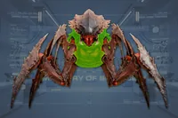
The Alpha 武士 is a 变体 of the 武士 that can only spawn from Alpha 指挥官, and is faster than its original counterpart.
Alpha 武斗虫 appear only on  不可能 and above, which is when Alpha 指挥官 begin appearing. They are summoned in a trio by Alpha 指挥官.
不可能 and above, which is when Alpha 指挥官 begin appearing. They are summoned in a trio by Alpha 指挥官.
Alpha 武斗虫 are identical to 武斗虫 in 行为, but due to their 已增加 移动速度, they are more likely to keep up with 绝地潜兵, allowing them to constantly 攻击. When their head is destroyed, Alpha 武斗虫 will enter a "狂暴" state, where they gain 已增加 移动速度 but continuously 流血 out.
Alpha 武斗虫 can release a cloud of 信息素 into the air that causes a 虫族入侵.
| 部件名称 | 生命值1 | 护甲值2 | 耐久2 | 主血量占比3 | 溢出上限4 | 构造5 | 致命 | 爆炸抗性6 | |
|---|---|---|---|---|---|---|---|---|---|
| 主体 | 325 |

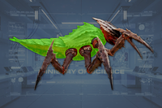 |
20% | - | - | 无 | 是 | 0% | |
| Head | 150 |
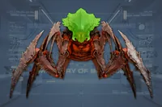
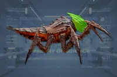 |
20% | 50% | 否 | 200 [70/s] | 是 | 100% | |
| Claws (2) | 100 |
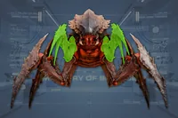
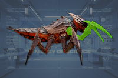 |
0% | 50% | 否 | 无 | 否 | 100% | |
| Legs (4) | 100 |
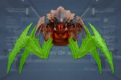
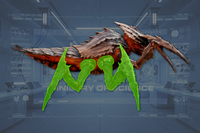 |
0% | 50% | 否 | 无 | 否 | 100% |
Disclaimer: 每个带数量的高亮部位 a 数量有各自的 生命值. 未标注数量的部位共享 生命值 pools.
斩击利爪
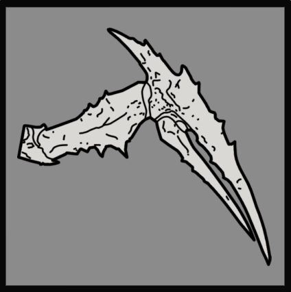
| 属性 | Value | |
|---|---|---|
| 55 近战伤害 65 耐久伤害 | ||
| 4/0/0/0 | ||
| 近战 | ||
| 近战 | ||
| 20 | ||
| 20 | ||
| 10 | ||
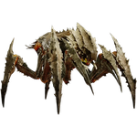
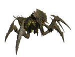
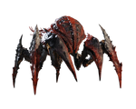
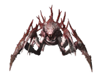
1.006.202
2026-04-28
未记录变更
1.004.100
2025-10-23
未记录变更